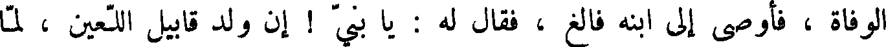
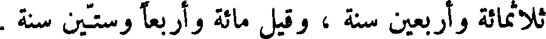
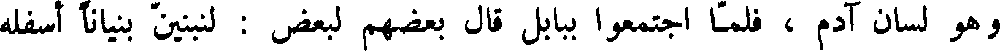
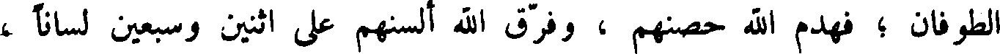
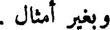
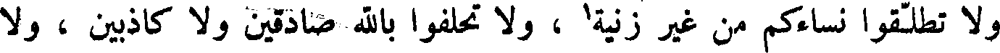

File: 000990.gt.txt (if the image is defective, simply delete all Arabic text and the line will be excluded)
وكان قد ولد له فالغ ، بعد أن أتت عليه مائة وأربع وثلاثون سنة ، ثم حضرته
File: 000991.gt.txt (if the image is defective, simply delete all Arabic text and the line will be excluded)

الوفاة ، فأوصى إلى ابنه فالغ ، فقال له : يا بني ! إن ولد قابيل اللعين ، لما
File: 000992.gt.txt (if the image is defective, simply delete all Arabic text and the line will be excluded)
اكثروا العمل بمعاصي الله ، سبحانه وتعالى ، ودخل معهم ولد شيث بعث الله
File: 000993.gt.txt (if the image is defective, simply delete all Arabic text and the line will be excluded)
عليهم الرجز ، فلا تدخل أنت ولا أهلك في ملة بني كنعان .
File: 000994.gt.txt (if the image is defective, simply delete all Arabic text and the line will be excluded)
ومات عابر يوم الخميس لثلاث وعشرين من تشرين الأول ، وكانت حياته
File: 000995.gt.txt (if the image is defective, simply delete all Arabic text and the line will be excluded)

ثلاثمائة وأربعين سنة ، وقيل مائة أربعا وستين سنة .
File: 000996.gt.txt (if the image is defective, simply delete all Arabic text and the line will be excluded)
فالغ بن عابر
File: 000997.gt.txt (if the image is defective, simply delete all Arabic text and the line will be excluded)
ثم قام بعد عابر فالغ ابنه يدعوا الناس إلى طاعة الله تعالى ، فكان في زمانه
File: 000998.gt.txt (if the image is defective, simply delete all Arabic text and the line will be excluded)
اجتماع ولد نوح ببابل ، وذلك أن ماش بن ارم بن سام بن نوح صار إلى ارض
File: 000999.gt.txt (if the image is defective, simply delete all Arabic text and the line will be excluded)
بابل ، فولد نمرود الجبار ، ونبيط ، وهو أبو النبط ، وهو أول من استنبط
File: 001000.gt.txt (if the image is defective, simply delete all Arabic text and the line will be excluded)
الأنهار ، وغرس الأشجار ، وعمر الأرض ، وكان لسانهم جميعا السرياني ،
File: 001001.gt.txt (if the image is defective, simply delete all Arabic text and the line will be excluded)

وهو لسان آدم ، فلما اجتمعوا ببابل قال بعضهم لبعض : لنبنين بنيانا أسفله
File: 001002.gt.txt (if the image is defective, simply delete all Arabic text and the line will be excluded)
الأرض وأعلاه السماء ! فلما أخذوا في البنيان قالوا : نتخذه حصنا يحرزنا من
File: 001003.gt.txt (if the image is defective, simply delete all Arabic text and the line will be excluded)

الطوفان ؛ فهدم الله حصنهم ، وفرق الله ألسنهم على اثنين وسبعين لسانا ،
File: 001004.gt.txt (if the image is defective, simply delete all Arabic text and the line will be excluded)

وبغير أمثال .
File: 001005.gt.txt (if the image is defective, simply delete all Arabic text and the line will be excluded)
وكان أول ما تكلم به من الإنجيل ، على ما في إنجيل متى : طوبى للمساكين
File: 001006.gt.txt (if the image is defective, simply delete all Arabic text and the line will be excluded)
القانعة قلوبهم بما عند ربهم ، بحق إن لهم ملكوت السماء ، طوبى للجياع
File: 001007.gt.txt (if the image is defective, simply delete all Arabic text and the line will be excluded)
العطاش في طاعة الله ، طوبى للصادقين في قولهم ، التاركين للكذب ، الذين
File: 001008.gt.txt (if the image is defective, simply delete all Arabic text and the line will be excluded)
هم ملح الأرض ونور العالم . لا تقتلوا ، ولا تسخطوا أحدا ، وارضوا من
File: 001009.gt.txt (if the image is defective, simply delete all Arabic text and the line will be excluded)
سخط عليكم ، وصالحوا خصمكم ، و لا تزنوا ، و لا تنظروا إلى غير نساءكم ،
File: 001010.gt.txt (if the image is defective, simply delete all Arabic text and the line will be excluded)
فان كانت عينكم اليمنى تدعوكم إلى الخيانة ، فاقلعوها حتى تنجوا بأبدانكم ،
File: 001011.gt.txt (if the image is defective, simply delete all Arabic text and the line will be excluded)

و لا تطلقوا نساءكم من غير زنية1 ، و لا تحلفوا بالله صادقين ولا كاذبين ، ولا
File: 001012.gt.txt (if the image is defective, simply delete all Arabic text and the line will be excluded)
بسمائه ولا بأرضه و لا تقاوموا الشر ولكن من لطمك على عارضك الأيمن
File: 001013.gt.txt (if the image is defective, simply delete all Arabic text and the line will be excluded)
فاقبل إليه بعارضك الأيسر ؛ ومن أراد أن ينزع قميصك ، فأعطه أيضا
File: 001014.gt.txt (if the image is defective, simply delete all Arabic text and the line will be excluded)
رداءك ؛ ومن سخرك ميلا ، فانطلق معه ميلين ؛ ومن سالك فأعطه ، ومن
File: 001015.gt.txt (if the image is defective, simply delete all Arabic text and the line will be excluded)
استقرضك فأقرضه و لا تحرمه .
File: 001016.gt.txt (if the image is defective, simply delete all Arabic text and the line will be excluded)
قد سمعتم انه قد قيل : أحبب قريبك وابغض عدوك ! أما أنا فأني أقول
File: 001017.gt.txt (if the image is defective, simply delete all Arabic text and the line will be excluded)
لكم : احبوا أعداءكم وصلوا من قطعكم ، وافعلوا الخير إلى من بغضكم . أن كنتم
File: 001018.gt.txt (if the image is defective, simply delete all Arabic text and the line will be excluded)
تحبون الذين يحبونكم فأي اجر لكم ؟ لا تظهروا صدقاتكم بين أيدي البشر ؛
File: 001019.gt.txt (if the image is defective, simply delete all Arabic text and the line will be excluded)
لا تعلم شمائلكم بما عملت أيمانكم ؛ لا تراؤوا الناس بصلاتكم ، وإذا صليتم
To Save: `Ctrl+s`, make sure to choose `Webpage, complete`!